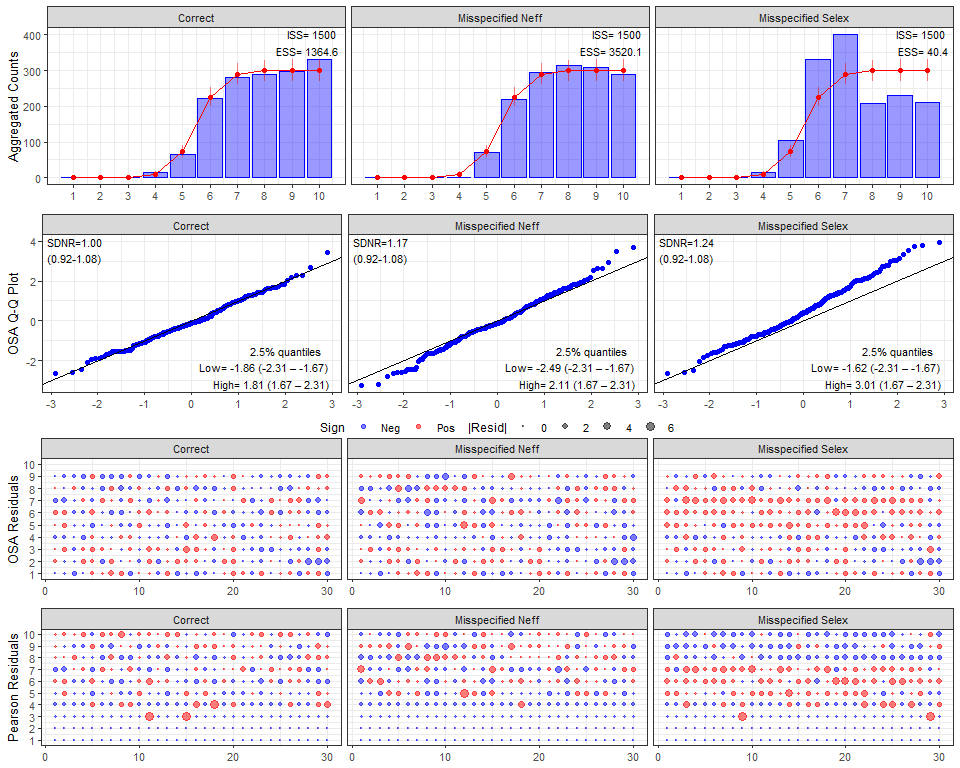

Overview
afscOSA is an R library that produces one step ahead (OSA) residual diagnostic plots for composition data fit in fisheries stock assessments at the Alaska Fisheries Science Center (AFSC). OSA residuals are computed using the {compResidual} R library (Trijoulet and Nielsen, 2022; Trijoulet et al., 2023). OSA residuals are available in afscOSA for composition data fit assuming a multinomial or Dirichlet-multinomial distribution from purely fixed effects assessment models.
For each data set (i.e., fleet), the output includes plots of the fit to aggregate compositions across years, a Q-Q plot of OSA residuals, and bubble plots for OSA and Pearson residuals. OSA residuals will be standard normal under a correctly specified model and so statistics are also provided to give context to the fit and guide understanding of causes of misfit. See Stewart and Monnahan (2025) for information on background and interpretation.
Installation
afscOSA relies on the {compResidual} R library. Install both using the instructions below:
# see https://github.com/fishfollower/compResidual#composition-residuals for more detailed
# installation instructions
TMB:::install.contrib("https://github.com/vtrijoulet/OSA_multivariate_dists/archive/main.zip")
remotes::install_github("fishfollower/compResidual/compResidual", force=TRUE)
remotes::install_github("noaa-afsc/afscOSA", force=TRUE)Example: OSAs as a Diagnostics for Model Misspecification
he example below demonstrates how One-Step-Ahead (OSA) residuals detect common stock assessment model misspecifications in age-composition data. We simulate 30 years of composition data under three scenarios using a logistic selectivity baseline:
- Correctly Specified Model: The expected proportions and effective sample size () match the underlying data-generating process.
- Misspecified : The model assumes double the true effective sample size ( vs. true ), overestimating data precision.
- Misspecified Selectivity: The model assumes logistic selectivity, but the true underlying process follows dome-shaped selectivity.
We calculate the OSA residuals with run_osa() and compare the diagnostic output using plot_osa().
library(afscOSA)
nbins <- 10 # age bins
Neff <- 50 # multinomial sample size
nyrs <- 30 # really no. of replicates for now
e1 <- matrix(rep(plogis(seq(-10,10, len=nbins)), times=nyrs),
ncol=nbins, byrow=TRUE)
## Simulate data
set.seed(1233)
# correctly specified
o1 <- t(apply(e1, 1, function(x) rmultinom(1, Neff, x)))
# wrong Neff (Neff too big; i.e., the model assumes the data is twice as precise
# as it actually is)
o2 <- t(apply(e1, 1, function(x) rmultinom(1, floor(Neff/2), x)))
# mispecified selex: change underlying selectivity shape from logistic to dome-shape
ewrong <- e1
ewrong[,(nbins-2):nbins] <- ewrong[,(nbins-2):nbins]/2
o3 <- t(apply(ewrong, 1, function(x) rmultinom(1, Neff, x)))
x1 <- run_osa(obs=o1, exp=e1, N=rep(Neff, nyrs), fleet='Correct', index=1:nbins,
index_label = 'age', years=1:nyrs, seed=10)
x2 <- run_osa(obs=o2, exp=e1, N=rep(Neff, nyrs), fleet='Misspecified Neff', index=1:nbins,
index_label = 'age', years=1:nyrs, seed=10)
x3 <- run_osa(obs=o3, exp=e1, N=rep(Neff, nyrs), fleet='Misspecified Selex', index=1:nbins,
index_label = 'age', years=1:nyrs, seed=10)
plot_osa(list(x1, x2, x3), use_agg_proportions = FALSE)
#> Warning in plot_osa(list(x1, x2, x3), use_agg_proportions = FALSE): The
#> following Pearson residuals were set to 6 for plotting: 6.25

References
Stewart, I.J. and Monnahan, C.C., 2025. Diagnosing common sources of lack of fit to composition data in fisheries stock assessment models using one-step-ahead (OSA) residuals. Canadian Journal of Fisheries and Aquatic Sciences, 82, pp.1-13.
Trijoulet, V., Nielsen, A. 2022. compResidual: Residual calculation for compositional observations. R package version 0.0.1.
Trijoulet, V., Albertsen, C.M., Kristensen, K., Legault, C.M., Miller, T.J. and Nielsen, A., 2023. Model validation for compositional data in stock assessment models: calculating residuals with correct properties. Fisheries Research, 257, p.106487.